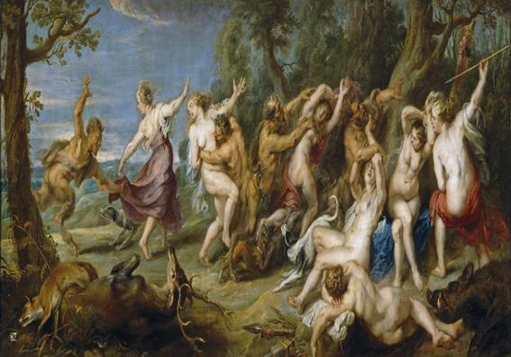
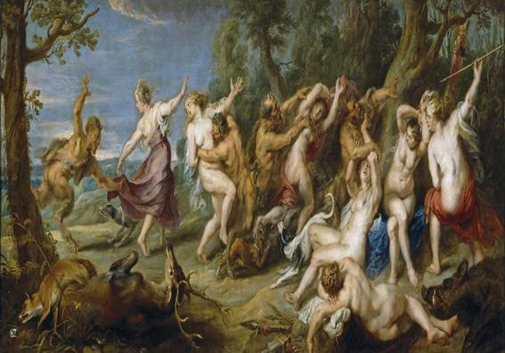
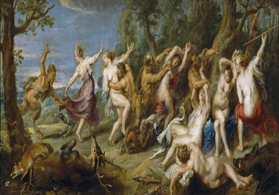
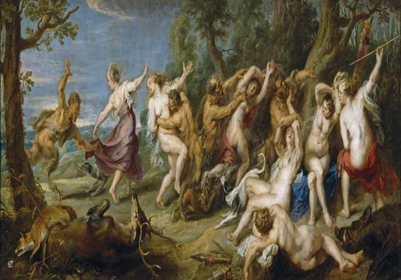

O parnasianismo na literatura brasileira surgiu como uma reação ao romantismo, consolidando-se entre 1880 e 1910. Inspirado pelo movimento francês do mesmo nome, o parnasianismo valorizava a forma, a estética e a objetividade, defendendo a arte pela arte, sem a necessidade de engajamento social ou político.
Estética da Forma: O parnasianismo enfatizava a perfeição formal e a precisão nas construções poéticas. Os poetas buscavam a harmonia e a musicalidade, utilizando técnicas como a rima rica e a métrica rigorosa.
Objetividade: Ao contrário do romantismo, que explorava os sentimentos e a subjetividade, os parnasianos buscavam uma abordagem mais objetiva e impessoal na criação literária.
Temática Variada: Os temas abordados eram variados, incluindo a natureza, a mitologia, a arte e a vida cotidiana, mas sempre tratados de maneira distante e desapaixonada.
Culto à Beleza: O movimento promovia a ideia de que a beleza era um valor supremo, e a poesia deveria ser uma busca pela perfeição estética.
A partir da década de 1910, o parnasianismo começou a perder espaço para o modernismo, que se consolidou com a Semana de Arte Moderna de 1922. O modernismo propôs uma ruptura com as tradições anteriores, explorando novas formas de expressão, subjetividade e a identidade brasileira.
O parnasianismo deixou uma importante contribuição para a literatura brasileira, influenciando a forma poética e a valorização da estética. Sua busca pela perfeição formal e a crítica ao romantismo abriram caminho para novas experimentações literárias que viriam com o modernismo.